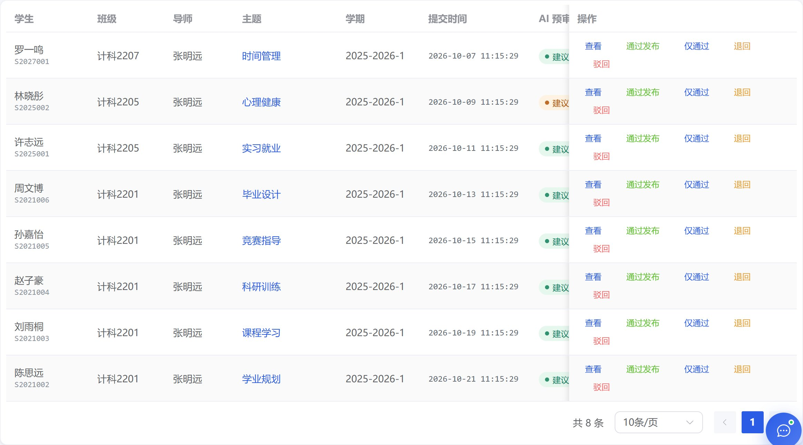
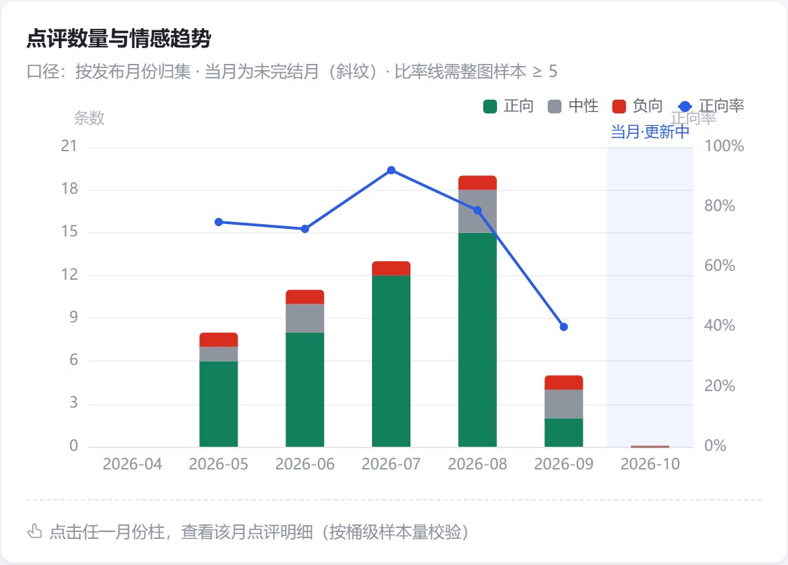
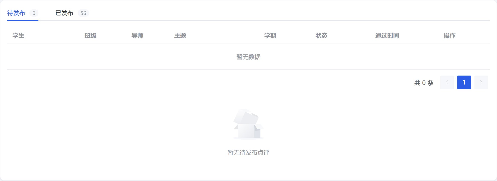
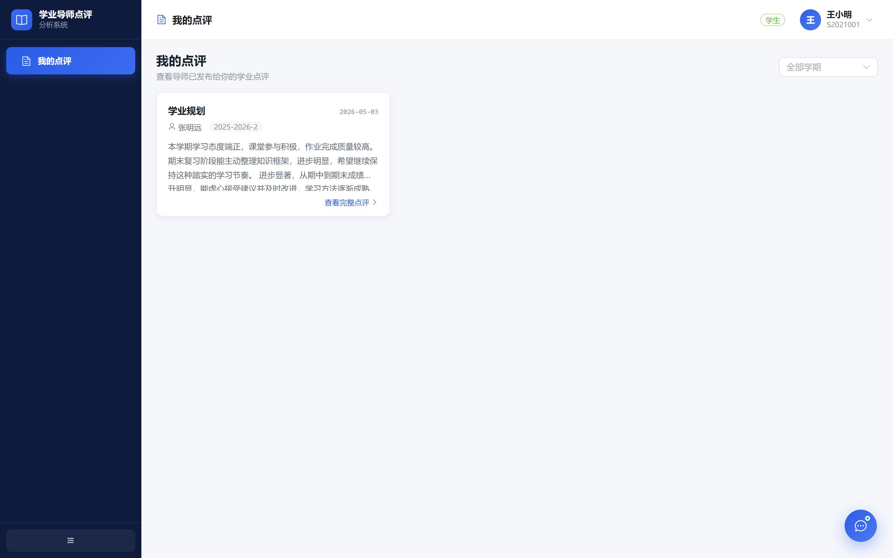
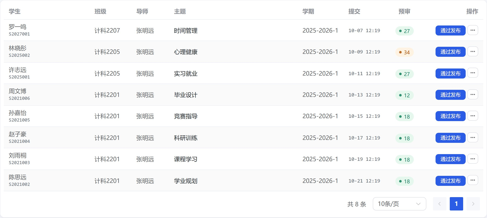
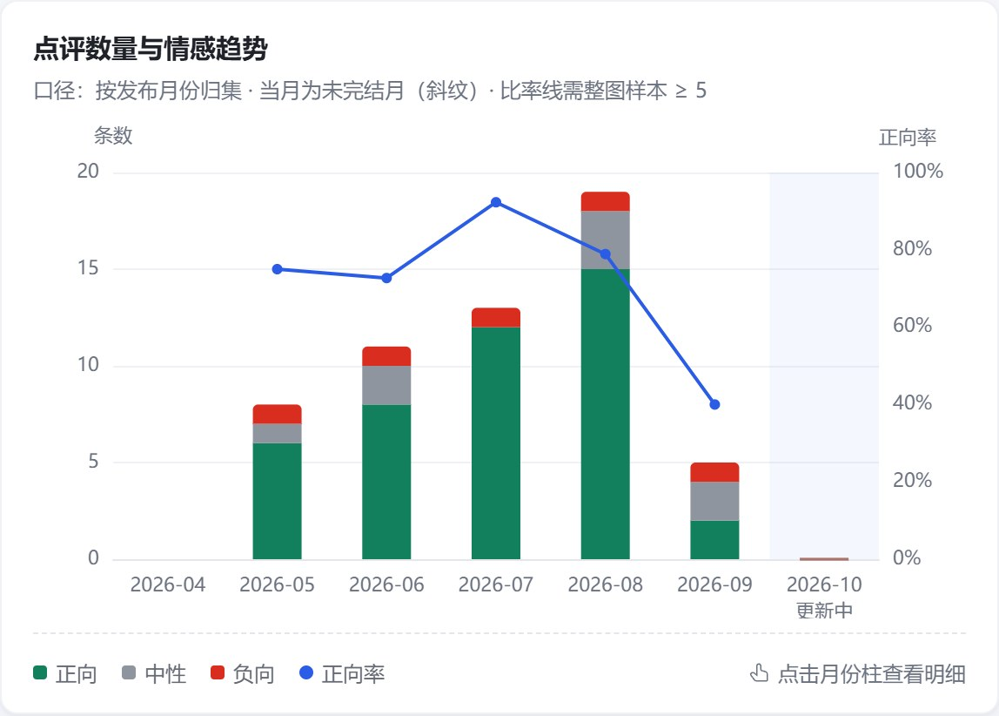
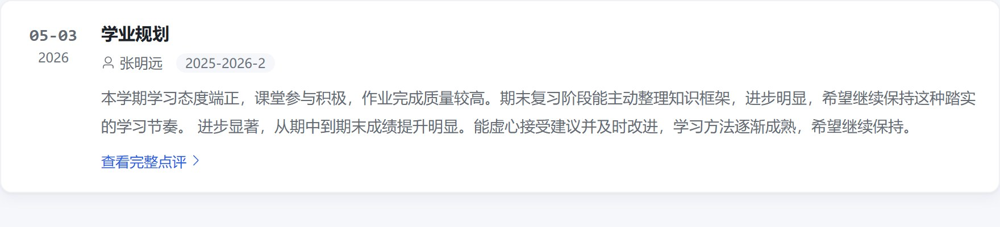

整体设计语言已经成熟——有完整的设计令牌、独立成套的状态色、每张图都写清统计口径、 样本不足时用「门禁空态」而不是假装有数据。真正的短板不在审美，而在信息密度控制与表格承载能力： 1440 宽度下审核队列的列被固定列压断、操作按钮换行，趋势图三处标签叠在一起，空页面同时出现三种空态。 这些问题在答辩投屏时会被直接看到，且修复成本很低。
先给判断，再给证据。下面每个 P0 都附了实测截图与重绘的修复示意。
主色只用于可点击动作、6 种状态各自成套、情感三色与状态色不共用——这套约束是对的，不要动。它解决了「看起来是蓝色=能点」的误读，是这份设计最值钱的部分。
审核队列 8 列 + 固定操作列，在 1440 下已溢出：预审列被压掉一半、5 个文字按钮折成两行。表格是全系统使用频率最高的组件，必须建立列宽预算与「主操作 + 更多」的收敛规则。
字号用了 10 档（11.5 / 12 / 12.5 / 13 / 13.5 / 14 / 15 / 16 / 17 / 20），灰度用了 4 级且最浅两级对比度仅 3.0:1 与 2.0:1。收敛到 6 档字号 + 3 级灰度，顺手把可访问性补齐。
这四项不是「不够好看」，而是「看起来像坏了」：内容被裁切、标签互相压字、同一屏出现三个空态。

1fr 列吃剩余空间；学期/时间压缩为 10-07 11:15 短格式。⋯ 下拉；操作列 330 → 150px。el-tooltip，列宽 132 → 64px。分数本身比「建议」二字更有信息量。
top:0, right:8，右轴名 正向率 也在右上角，两者直接叠字；
markArea 的「当月·更新中」标签又被卡片右边缘裁掉一半。
三个标签挤在同一个 40px 的角落，读者第一眼看到的是一团灰。
legend.show=false，改用 ChartCard 页脚已有的 .legend-row 手写图例——样式系统里早就有，只是没用上。nameGap: 32；两轴本就容易误读，空间又不够。splitNumber: 4，避免 21 / 18 / 15 这种非整数刻度。
el-empty 插画「暂无待发布点评」→ 右下角还有
「共 0 条」分页。三处说同一件事，且位置分散，用户会以为页面加载失败。
「通过」与「发布」是两个维度：已通过的点评会先进入这里，确认后再推送给学生。审核队列还有 8 条等待处理。
<template #empty> 接管表格空态，全局只留一处。v-if="total > 0" 控制分页，0 条时不渲染。GateEmpty 与普通空态的视觉：同一套图标容器 + 标题 + 说明，区别只在文案。
max-width:880px 居中，日期做左栏锚点。长文本阅读优于 3 列窄卡。repeat(auto-fill, minmax(300px,1fr))，且条数 < 3 时自动降为 1 列。-webkit-line-clamp 从 3 提到 4，行高 1.8，正文色用 --mc-text-2 而非 text-3。不影响功能，但会让系统看起来「不是一个团队做的」。逐条都有明确落点。
| 问题 | 位置 | 改法 | 级别 |
|---|---|---|---|
| 标题重复两遍 | AppLayout + 各页 | 顶栏显示「统计报表」，页面内又是 20px「统计报表」+ 副标题。顶栏改为面包屑 工作台 / 统计报表，或只保留产品名 + 全局操作，页面标题独占一层。 |
P1 |
| 词云 10 色彩虹 | WordCloudCard.vue | 红/绿在系统里已被占用为「负向/正向」，词云用红绿会暗示情感含义。改为单一主色相 5 档明度，按词频加深。 | P1 |
| KPI 7 列过窄 | KpiGrid.vue | 1440 下每卡仅 118px，1280 断点掉成 4 列右侧留空。改 repeat(auto-fit, minmax(148px,1fr))；数值 26 → 28px；左侧 3px 色条改顶部细线或底色，窄卡下更像装饰。 |
P1 |
| 辅助文字对比度不足 | styles/index.css | --mc-text-3 #8f959e 在白底仅 3.0:1，--mc-text-4 #b4b8bf 仅 2.0:1，都低于 WCAG AA 的 4.5:1，而它们承载了 12px 的口径说明与 KPI 注释。合并为 3 级灰：#1f2329 / #646a73 / #6b7280（5.0:1）。 |
P1 |
| 「更新时间」取的是创建时间 | CommentList.vue | 列名与数据不符（fmtTime(row.createdAt)）。后端补 updatedAt，或列名改「创建时间」。答辩被问到会很尴尬。 |
P1 |
| AI 配置页两列高度失衡 | AiConfig.vue | 「端点」grow + 「模型名」260px，右侧提示 3 行把行高撑开，左侧留出大片空白。两列改 1fr 1fr，提示文案压到 2 行 + 「查看说明」展开。 |
P1 |
| 操作按钮四色并排 | AuditQueue / People | primary / success / warning / danger 四种文字按钮同排，靠颜色区分动作，色弱用户无法分辨。主操作实心、次操作收进「更多」，危险操作用图标 + 二次确认。 | P1 |
不是推翻现有体系，而是把已经「用对了」的规则写死成令牌，减少临时数值。
--mc-focus: 0 0 0 3px rgba(43,92,230,.18)，补齐键盘焦点态按「演示可见度 × 修复成本」排序。P0 全部是模板与样式改动，不动后端接口。
改完逐条打勾；全部通过即视为 P0 + P1 收口。
同一套 demo 数据、同一分辨率重截。以下为改动后的实际效果，不是设计稿。

⋯，不再折行。顺带修掉了「筛选条件后端根本没接」的问题——
现在搜索与学期/导师筛选真实生效，筛选后为空会显示「没有匹配的点评」而不是「队列是空的」。

